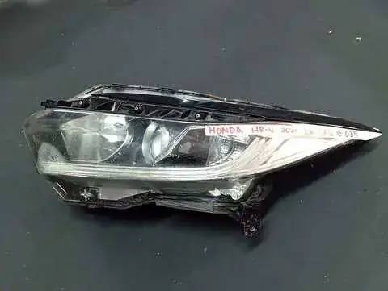

Piezas de carrocería para Honda HR-V
13 piezas disponibles hoy para Honda HR-V, cada una con su foto y su código: faros y lámparas delanteras (3), defensas delanteras (3), lámparas traseras (2), parrillas (1). Dinos el año de tu carro y te confirmamos si le sirve.
- Garantía de 3 días
- Foto real de cada pieza
- Efectivo, Yappy o ACH
- Lunes a sábado, 8:00 a. m. a 5:00 p. m.
Faros y lámparas delanteras para Honda HR-V 3
 088HRV2023-26 · lado izquierdo · original
088HRV2023-26 · lado izquierdo · original
089HR-V2019-22 · lado izquierdo · original 100HR-V2023-26 · lado derecho · original
100HR-V2023-26 · lado derecho · original 897HR-V
897HR-V 902HR-V
902HR-V 903HR-V
903HR-V 347HR-V
347HR-V 526HRV
526HRV FL027HRV
FL027HRV TB034HR-V
TB034HR-V DDI030HR-V
DDI030HR-V